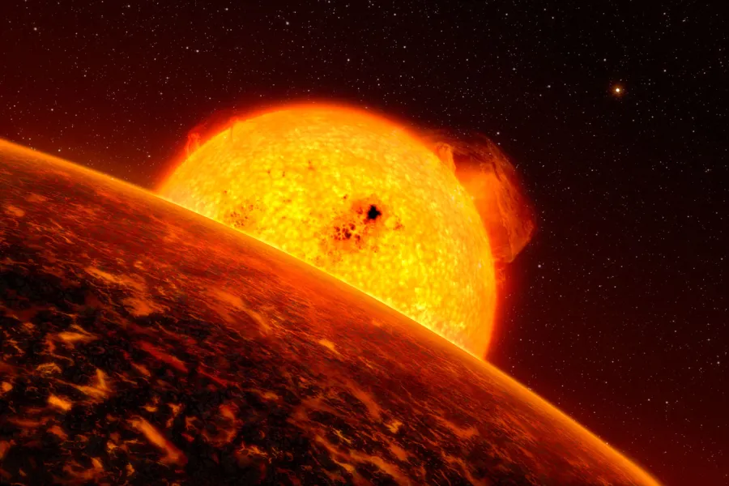

September 16, 2009
CoRoT-7b: first solid evidence for a rocky exoplanet
Measurements with the HARPS spectrograph on ESO's 3.6-meter telescope yielded about five Earth masses for the exoplanet CoRoT-7b. Together with the known radius – about 80 percent larger than Earth's – this gives a density close to that of Earth. This points to a solid, rocky planet.
CoRoT-7b orbits its star, about 500 light-years away, in 20.4 hours and is only 2.5 million kilometers from it. The dayside is probably hotter than 2000 degrees; models suggest lava there. The data also revealed a second planet, CoRoT-7c, with about eight Earth masses.
Source: ESO: "First Solid Evidence for a Rocky Exoplanet." (eso0933), 2009-09-16